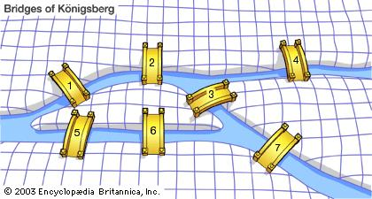

This is a javascript/nodeJS program modified from an existing Group Me repository. I modified the codebase to allow the bot to identify any message sent into the chat, read the content, and use the CleverBot API to generate a smart response. Chat dialogues can be seen to the right. This application is deployed to Heroku.
Django App that aggregates the last 10 bills voted on by a congress member according to a zip code. Information is displayed into
3 columns: Bill Title, Bill Description, and Member Position.
(disclaimer: zip codes are used
for simplicity in this app and are not exact when determining the congressional representatives by location.)
Click Here for Live App
C++ program that uses file I/O to take in text files of thousands of ACTG genetic sequences and condenses them into one contiguous string resembling a gene. Appending is based on 20 character overlaps between consecutive strings. Program uses custom string class.
The Konigsberg Bridge Problem is to find a way to travel each bridge only once and travel every bridge. You may begin on any island. This is an impossible task and this Java code shows this by traveling every single path possible. This is executed by representing the islands as vertices and the bridges as edges of a graph. A recursive loop is implemented to solve this problem and the paths are stored in ArrayLists to keep track of the paths taken. This program writes out each path taken and the number of bridges traveled. This number never reaches 7 proving that the task is impossible.
Java program to find the minimum spanning tree of an undirected graph data structure using Prim's and Kruskal's Algorithms.